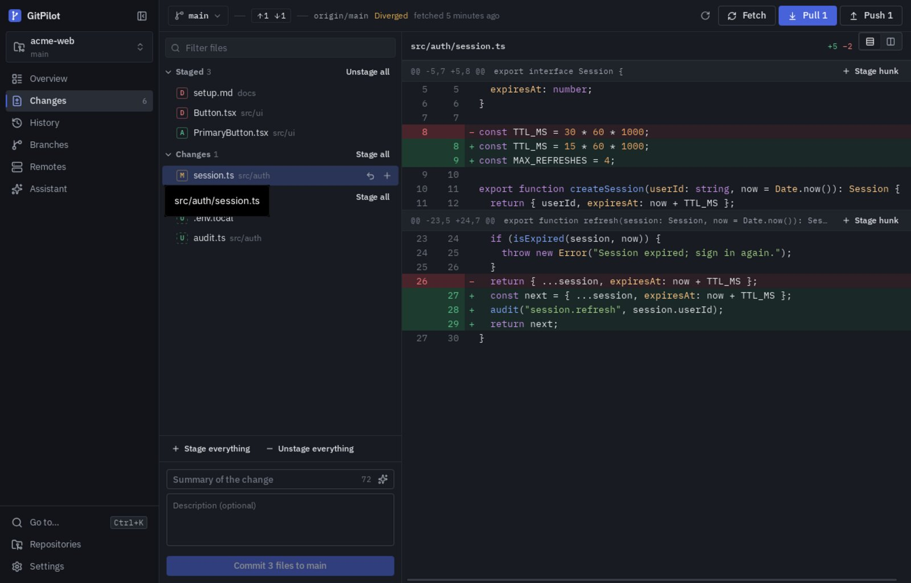

Free for Windows & Linux
Git, made clear
GitPilot is a desktop Git manager for Windows and Linux. See exactly what changed, pick the lines that go into each commit, and get a plain explanation whenever Git says no.

The Changes view: pick files, hunks or single lines, then commit.
Linelevel staging
2 OSWindows & Linux
Signedauto updates
Freeto download
What's new
Straight from the latest release notes on GitHub.
Everything you do with Git, in one window
Built on the Git you already have installed, so nothing is simulated and your repositories stay exactly as Git expects.
Commit exactly what you mean
Stage whole files, single hunks, or individual lines straight from the diff. Unstaged work is never swept into a commit.
A diff viewer that reads like an editor
Unified or side-by-side, syntax highlighting, line numbers, and sensible handling of binary, renamed and very large files.
Branches without the fear
Create, switch, merge, rebase, cherry-pick and revert. When Git pauses for conflicts you get Continue, Skip and Abort, not a wall of text.
Safe by default
Discarding changes asks first and keeps a backup. No silent force-pushes, no auto-stashing, no history rewrites without your say-so.
Sync that tells the truth
Fetch, pull and push with progress you can cancel. Ahead, behind, diverged or never fetched: you always know where you stand.
AI and Claude Code, if you want them
Optional commit-message suggestions from your staged changes, and one click to open Claude Code in the repository with a ready-made prompt.
Download
Get the latest release. Git must be installed on your computer.
Windows
Windows 10 and 11, 64-bitWindows may say “Windows protected your PC” because the installer isn't code-signed yet. Choose More info → Run anyway. Needs Git for Windows.
CachyOS, Arch & Manjaro
pacman package$
sudo pacman -U gitpilot-bin-*-x86_64.pkg.tar.zstAny Linux
AppImage, no install needed$
chmod +x GitPilot_*_amd64.AppImage && ./GitPilot_*_amd64.AppImageAll files and release notes are on the GitHub releases page.
Install once, stay up to date
GitPilot checks for new versions and updates itself in place. Your repositories and settings are kept.
A new version is out
“Update to x.y.z” appears at the bottom of the sidebar. GitPilot checks at most once a day, or whenever you ask in Settings.
Click Update now
The update is downloaded and its signature checked, so only official releases are installed.
Restart
GitPilot reopens on the new version. No uninstalling. On CachyOS and Arch, pacman handles the upgrade.
Try GitPilot
Open a repository you already have and see your changes the way they should look.